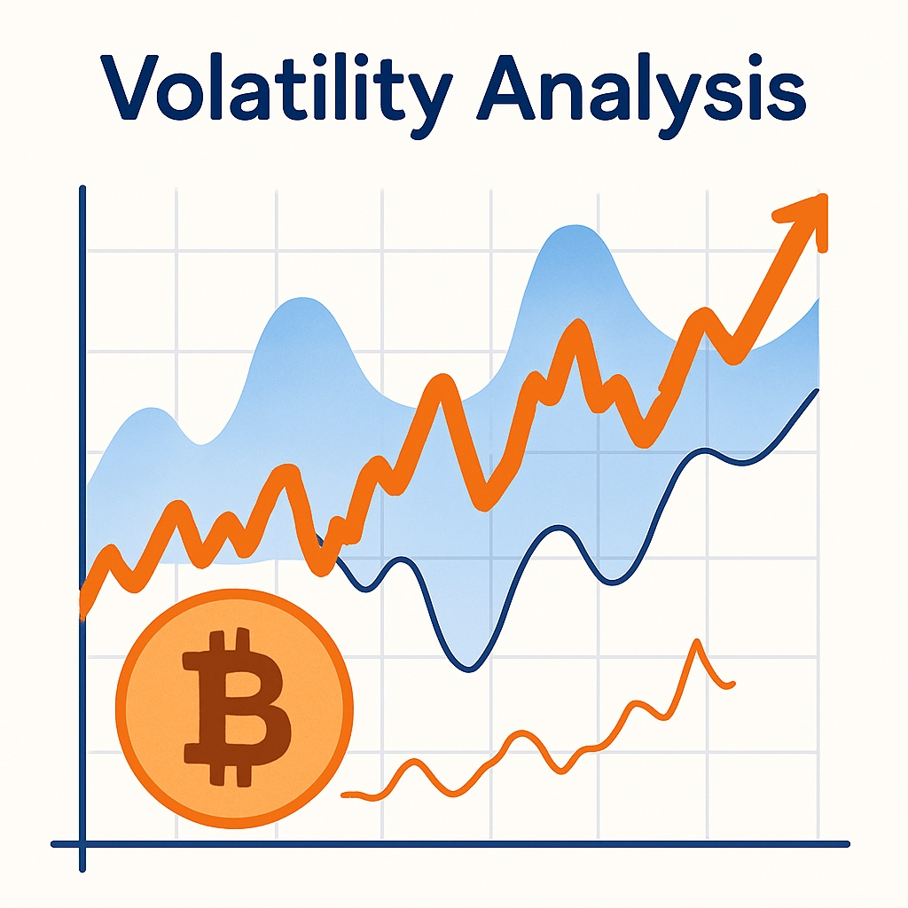

Bitcoin Price Forecast for End of 2025: Comprehensive Review and Outlook
The content of this article is for informational purposes only and should not be considered financial advice. Investing in cryptocurrencies involves risk.
Introduction
As of August 20, 2025, 01:02 AM EEST, Bitcoin (BTC) trades near $61,200, maintaining its status as the top cryptocurrency by market value. Launched by Satoshi Nakamoto, Bitcoin pioneered decentralized money on blockchain technology, enabling peer-to-peer transactions without intermediaries. Its function as a store of value, ongoing institutional interest, and integration into global finance position it as a key player in the crypto space. This article reviews BTC’s potential performance by the end of 2025, assessing optimistic and pessimistic scenarios, major growth drivers, and risk factors in light of present market dynamics.

Current Situation
On August 20, 2025, Bitcoin trades around $61,200, which marks a 15% rise since June 2025 when its price was $53,300. Over the last month, BTC has performed strongly, closing in profit on 55% of trading days and showing moderate volatility of 4.8%. The Fear and Greed Index sits at 68, signaling positive market sentiment fueled by institutional capital, broader payment use, and macroeconomic concerns like inflation. Compared to August 2024, Bitcoin advanced from $40,500 — a 51% yearly gain. Since 2020, when BTC was valued at $11,800, it has appreciated 418%, supported by adoption and capped supply of 21 million coins.
Price Predictions for End of 2025
Analysts’ expectations for Bitcoin by December 2025 vary with market conditions. A bearish outlook anticipates a dip toward $45,000 in the event of a 30–40% correction in early 2025. A balanced view places BTC between $65,000 and $80,000, supported by institutional inflows and economic uncertainty. Optimistic estimates suggest BTC could rally toward $90,000–$100,000 if momentum builds during February–April 2025. Some forecasts see Bitcoin hitting $85,000 by October 2025 should institutional demand and mainstream usage keep expanding.
Factors Driving Price Growth
- Institutional Adoption: Expanding involvement of funds, ETFs, and corporations continues to strengthen Bitcoin’s credibility.
- Store of Value: BTC is increasingly used as a hedge against inflation and currency risks, boosting demand.
- Network Security: A resilient blockchain and high hash rate reinforce confidence among long-term holders.
- Market Rally: A projected crypto uptrend in early 2025 could provide further momentum for BTC appreciation.
- Limited Supply: The 21 million BTC cap ensures scarcity, enhancing value as adoption rises.
Risks and Downward Factors
- Market Volatility: A potential 30–40% correction in early 2025 could weigh heavily on investor confidence.
- Regulatory Risks: Tighter oversight of crypto assets worldwide may hinder Bitcoin adoption and accessibility.
- Competition: Alternative cryptocurrencies and evolving blockchain platforms could challenge BTC’s market leadership.
Volatility Analysis
Between July and August 2025, Bitcoin climbed from $53,300 to $61,200, posting a 15% increase with 4.8% volatility — relatively stable versus historical averages. Its 51% yearly growth highlights robust momentum. Technical indicators, such as bullish signals in the 50-day and 200-day EMAs, point to continued upside. A potential recovery phase in February–April 2025 may further sustain this trend, reinforcing Bitcoin’s role as a store of value and institutional asset. Coupled with strong security and adoption, BTC is positioned for steady long-term growth.
Conclusion
By December 2025, Bitcoin is forecasted to trade between $65,000 and $90,000, with bullish potential extending to $100,000. This projection is underpinned by institutional demand, its inflation-hedge role, and limited supply. Nevertheless, investors must remain aware of volatility, regulatory changes, and competing assets. Careful research and risk control remain crucial before entering the market.